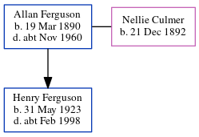

Henry G Ferguson 1923 - c1998
[ Home ] | [ Calendar ] | [ Surnames Index ] | [ Errors ] | [ Family History ]An apprentice engineering junior and the child of Allan Ferguson (a shunter petroleum refinery) and Nellie Culmer, Henry Ferguson, the third cousin once-removed on the mother's side of Nigel Horne, was born in Strood, Kent, England on 31 May 19231,2,3. He married Jeanne Harman in Thurrock, Essex, England around Nov 19504. On 29 Sept 1939, he was living at 15 Billet Road in Thurrock1 - less than a mile from his grandmother Mary Lawrence who was living at 15 Billet Road in Thurrock.
He died c. Feb 1998 in Brentwood, Essex, England3.
Parents
- Allan Emery was born on 19 Mar 1890
- Nellie Louisa was born on 21 Dec 1892
Citations
- 1939 Register - Findmypast (was the son of the head of the household)
- England & Wales births 1837-2006 - Findmypast
- England & Wales deaths 1837-2007 - Findmypast
- England & Wales Marriages 1837-2005 - Findmypast
Media
England & Wales deaths 1837-2007 - BMD/D/1998/2/82488766
England & Wales births 1837-2006 - BMD/B/1923/2/AZ/000457/042
England & Wales marriages 1837-2005 - BMD/M/1950/4/AZ/000385/086
Family Tree
Map
Generated by ged2site. Last updated on Jul 3, 2024